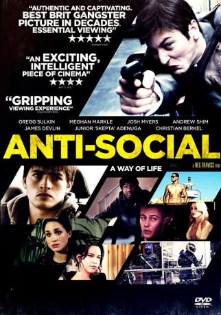
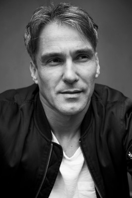

#10926 Criminals
Alternativ: Anti-Social (Originaltitel)
 
 IMDB-Wertung: 6.1 / 10
IMDB-Wertung: 6.1 / 10  Metascore: 0
Metascore: 0 
Zwei Brüder versuchen auf unterschiedliche Weise, sich von der Gesellschaft abzuwenden und sind beide im Londoner Untergrund aktiv. Während Dee sich als Straßenkünstler einen Namen macht, raubt Marcus Juwelierläden aus. Bei einer Auseinandersetzung mit einer rivalisierenden Gang wird Marcus angeschossen. Aufgrund der Schussverletzung kann er am nächsten Coup nicht teilnehmen. Dee soll ihn deshalb vertreten.
Jahr: 2015
Dauer: 99 Minuten
FSK: 16
Land: Ungarn Studio: Marco Polo ProductionTonspuren:
Untertitel: Deutsch,
Auflösung: 1080p (1920x808) Größe: 4454 MB
Genre: Krimi
Regisseur: Reg Traviss
Drehbuch: Reg Traviss
Soundtrack: George Kallis
Darsteller:
 Gregg Sulkin als Dee
Gregg Sulkin als Dee Meghan Markle als Kirsten
Meghan Markle als Kirsten Josh Myers als Marcus
Josh Myers als Marcus Christian Berkel als Philip
Christian Berkel als Philip- Michael Maris als Kwame
- Andrew Shim als Jason
- Devlin als Nicky
- Richie Campbell als Dominic
 Sophie Colquhoun als Emma
Sophie Colquhoun als Emma- Caroline Ford als Rochelle
- Skepta als Leon
 Aymen Hamdouchi als Junior
Aymen Hamdouchi als Junior-  Doug Allen als Chris
- María Fernández Ache als Nadine
- Sasha Frost als Tara
- Zita Téby als Kerry
- Lisa Moorish als Leila
- Amanda Ryan als Claire
- Rob Knighton als Tim
- Tebraiz Shahzad als Karim
- Jeremy Wheeler als Customs Officer
- Missy Malek als Fashion PR Girl
 Scott Alexander Young als TV Reporter
Scott Alexander Young als TV Reporter- Hans Peterson als Flying Squad Officer
- Helen Austin als News Reporter
 Caroline Boulton als BBC 24 Newsreader
Caroline Boulton als BBC 24 Newsreader- Erika Sajgál als Nadine's Friend
- Giacomo Mancini als Shaun
- Ben Peel als Baxter
- Hajni Zsigar als Ursula
- Reiss Davison als Danny
- Philipp Heerwagen als Airline Steward
- Boglárka Komán als Punk Girl
- Nadett Von Grega als Elegant Gallery Owner
- Violetta Kassapi als Rude Girl
- Egerszegi Anna als Jeweler's Assistant
- James Fred Harkins Jr. als Jeweler
- Ehijele Mohammed als Shaun's Friend
- Torren Simonsz als Male Model 1
- Grant Sulkin als Male Model 2
- Cory Rhys White als Vile Street Youth
- Lara Allen als Brunette Bank-Teller
- Wayne Brett als Police Sergeant
- Roy Carey als Nightclub gangster
- Greta Csizmadia als Airline Hostess
- Nadia Hussein als Bank Secretary
- Rupert Ingram als Businessman
- Melanie Light als Tattooist
- Helena Linder als Blonde Bank-Teller
- Noemi Mravik als Rita
Datei: X:\2015(A-F)\Criminals (2015, FSK16, 1920x808).mkv seit 04.04.2019
Festplatte: HD 2015(A-Z)
 Es gibt insgesamt 143 Filme in der Gruppe '2015(A-F)'
Es gibt insgesamt 143 Filme in der Gruppe '2015(A-F)'